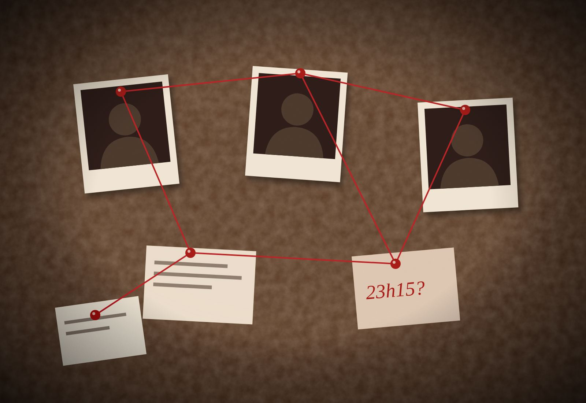
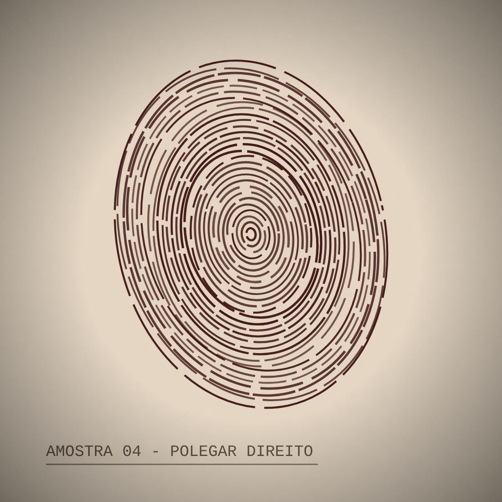
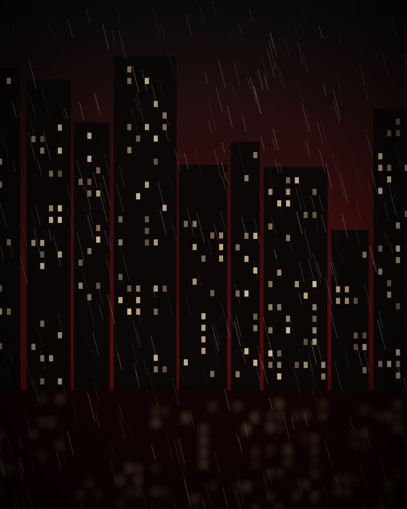
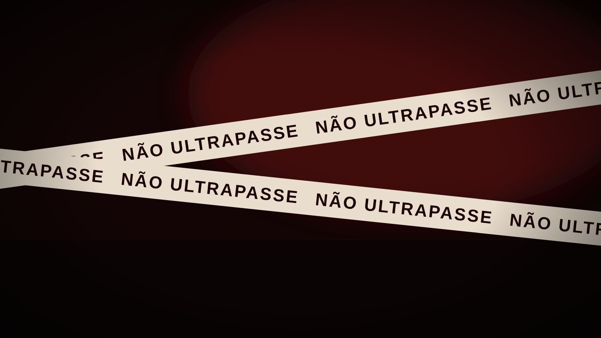
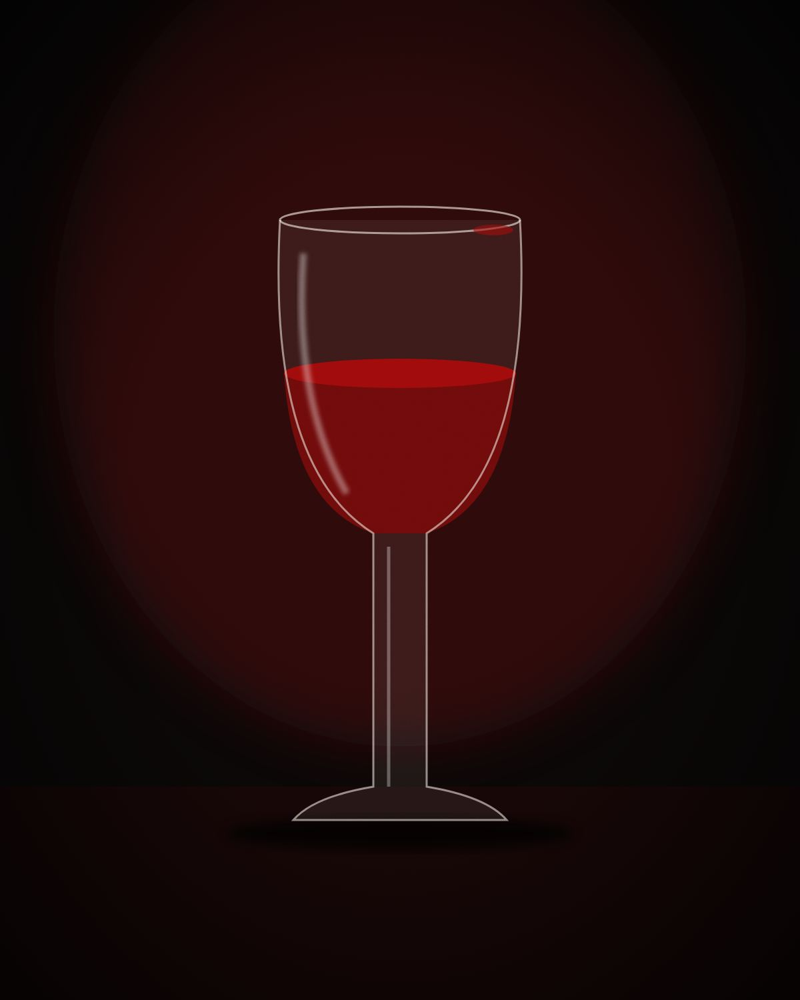

Faz pensar de outro jeito
Uma boa história de crime não entrega a resposta. Ela espalha pistas e espera que você junte as peças.
Sem perceber, você passa a desconfiar do óbvio e a olhar a mesma cena por vários ângulos.
Séries, filmes e documentários de crime
Um arquivo para quem não consegue largar um mistério antes de descobrir o culpado.
Abrir o arquivo
Caso nº 017: ainda sem culpado.


Uma boa história de crime não entrega a resposta. Ela espalha pistas e espera que você junte as peças.
Sem perceber, você passa a desconfiar do óbvio e a olhar a mesma cena por vários ângulos.
Testemunhas mentem, provas enganam e o primeiro suspeito quase nunca é o culpado.
Você aprende a pesar cada informação antes de acreditar nela, inclusive fora da tela.
Cada episódio termina com uma pergunta que não deixa você dormir.
E a vontade de entender o porquê leva a pesquisar casos reais, perícia e psicologia.
Os melhores detetives resolvem o caso pelo detalhe que ninguém levou a sério.
Assistir a eles é treinar o olhar para soluções que não estão no caminho mais curto.
A primeira regra de qualquer investigação

Antes de Sherlock Holmes, veio Auguste Dupin, criado por Edgar Allan Poe em 1841 no conto “Os Assassinatos da Rua Morgue”. Muitos consideram essa a primeira história de detetive.
Agatha Christie é a romancista mais vendida de todos os tempos, com cerca de 2 bilhões de livros. Quase todos são mistérios de assassinato.
A palavra veio de críticos franceses. Depois da Segunda Guerra, eles chamaram de “film noir” (filme negro) os filmes policiais americanos cheios de sombras e personagens sem saída.
O sucesso de séries de perícia fez muitos jurados reais passarem a esperar provas de DNA em todo julgamento. Os cursos de ciência forense também ficaram mais procurados.
Em 2014, o podcast “Serial” investigou a condenação de Adnan Syed. A repercussão foi tão grande que o caso voltou a ser discutido na justiça americana.
Edmond Locard, um dos pais da ciência forense, era fã de Sherlock Holmes. Dele vem a ideia de que todo contato deixa um vestígio, base da investigação até hoje.

Galeria Duarte, 23h40. Quem serviu a última taça?
Um caso esperando por você
Uma morte numa galeria de arte, quatro suspeitos e oito pistas. No final, você aponta o culpado e descobre que tipo de investigador você é.
Resolver um caso